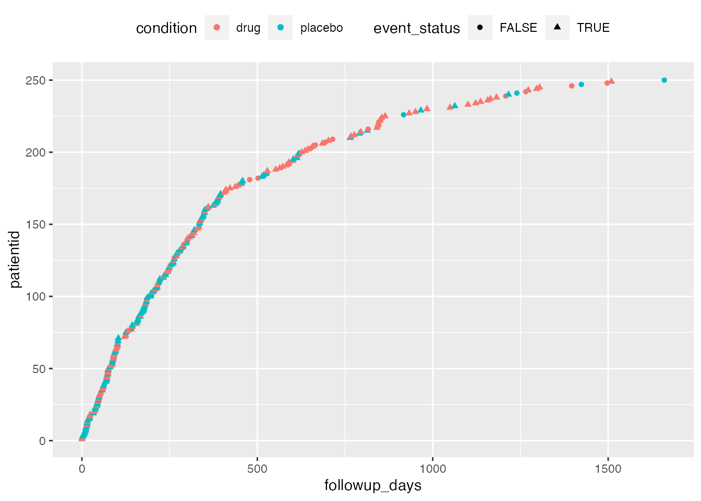
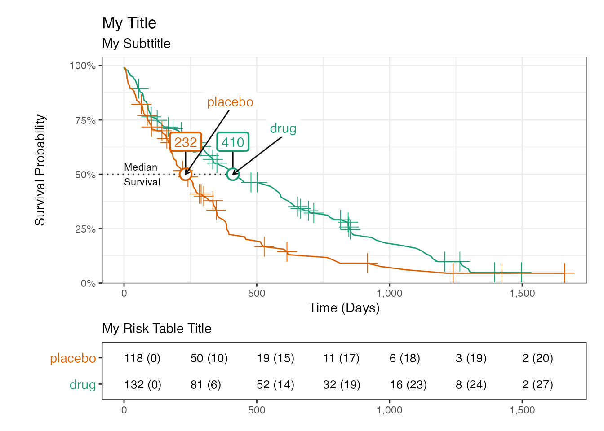

introduction
introduction.Rmd
library(iwillsurvive)
#> -----------------------------------------------------
#> iwillsurvive 0.1.3.9000 'Gloria'
#> Intro : vignette('introduction', 'iwillsurvive')
#> Repo : https://github.com/ndphillips/iwillsurvive
#> .....................................................
library(dplyr)
#>
#> Attaching package: 'dplyr'
#> The following objects are masked from 'package:stats':
#>
#> filter, lag
#> The following objects are masked from 'package:base':
#>
#> intersect, setdiff, setequal, union
library(survival)
library(ggplot2)
library(tidyr)
library(survminer)
#> Loading required package: ggpubrThe survival model
I’ll now give a very brief overview of the basic survival model that iwillsurvive works with. For a more thorough and informative discussion, I can’t recommend Emily C. Zabor’s Survival Analysis in R tutorial enough. It’s awesome.
Trial data
We’ll start with the ez_cohort dataset which represents the results of a (fictional) clinical trial testing the effectiveness of a drug in extending survival from a patient’s first line of therapy start date
| patientid | condition | lotstartdate | lastvisitdate | dateofdeath |
|---|---|---|---|---|
| F00001 | placebo | 2016-05-17 | 2020-12-01 | NA |
| F00002 | placebo | 2020-07-27 | 2020-08-25 | 2020-10-05 |
| F00003 | drug | 2016-04-14 | 2017-02-16 | 2017-03-13 |
| F00004 | drug | 2020-06-12 | 2020-11-25 | NA |
| F00005 | placebo | 2019-03-20 | 2020-01-13 | 2020-02-21 |
| F00006 | placebo | 2017-04-02 | 2017-10-18 | 2017-11-19 |
| F00007 | placebo | 2018-01-26 | 2019-01-12 | 2019-02-17 |
| F00008 | placebo | 2015-07-02 | 2015-11-20 | 2015-12-23 |
| F00009 | drug | 2019-03-08 | 2020-07-18 | 2020-08-17 |
| F00010 | placebo | 2018-08-23 | 2019-02-14 | 2019-03-08 |
Here’s what each column means:
| Column | Definition |
|---|---|
patientid |
A character referring to an individual patient in the form “FXXXXX” |
condition |
A character indicating which condition the patient was in, unique values are: placebo, drug |
lotstartdate |
A date indicating when a patient started their first line of therapy after diagnosis |
lastvisitdate |
A date indicating the last known date that a patient was alive |
dateofdeath |
A date indicating the date of death of patients who died during the study period |
The plot below visualizes these data:
ez_cohort_long <- ez_cohort %>%
arrange(lotstartdate) %>%
mutate(patientid = as.numeric(factor(patientid, levels = patientid, ordered = TRUE))) %>%
pivot_longer(cols = lotstartdate:dateofdeath, names_to = "event", values_to = "date")
ggplot(ez_cohort_long, aes(x = date, y = patientid, col = condition, shape = event)) +
geom_point() +
theme(legend.position = "top")
#> Warning: Removed 48 rows containing missing values (geom_point).
Survival data
Once we have our trial data, we now need to define some key survival data:
| Variable | Definition |
|---|---|
followup_date |
The date at which the event occurs (if known), otherwise the last date the patient was known to be alive |
followup_days |
The number of days from indexdate to followupdate
|
eventstatus |
A logical column indicating whether or not the patient died. TRUE = Yes, FALSE = No. |
To calculate these variables, we can use iwillsurvive’s derive functions:
cohort <- ez_cohort %>%
derive_followup_date(event_date = "dateofdeath",
censor_date = "lastvisitdate") %>%
derive_followup_time(index_date = "lotstartdate") %>%
derive_event_status(event_date = "dateofdeath")Here’s how the new columns look:
| patientid | condition | followup_date | followup_days | followup_months | followup_years | event_status |
|---|---|---|---|---|---|---|
| F00001 | placebo | 2020-12-01 | 1659.93708 | 54.531442 | 4.5447845 | FALSE |
| F00002 | placebo | 2020-10-05 | 70.10455 | 2.303040 | 0.1919411 | TRUE |
| F00003 | drug | 2017-03-13 | 333.35423 | 10.951190 | 0.9126991 | TRUE |
| F00004 | drug | 2020-11-25 | 166.74057 | 5.477680 | 0.4565233 | FALSE |
| F00005 | placebo | 2020-02-21 | 338.18433 | 11.109866 | 0.9259236 | TRUE |
| F00006 | placebo | 2017-11-19 | 231.78657 | 7.614539 | 0.6346144 | TRUE |
| F00007 | placebo | 2019-02-17 | 387.86797 | 12.742049 | 1.0619537 | TRUE |
| F00008 | placebo | 2015-12-23 | 174.93504 | 5.746880 | 0.4789591 | TRUE |
| F00009 | drug | 2020-08-17 | 528.43528 | 17.359897 | 1.4468166 | TRUE |
| F00010 | placebo | 2019-03-08 | 197.04442 | 6.473207 | 0.5394930 | TRUE |
Now we can vizualise the survival data
cohort_long <- cohort %>%
arrange(followup_days) %>%
mutate(patientid = as.numeric(factor(patientid, levels = patientid, ordered = TRUE)))
ggplot(cohort_long, aes(x = followup_days, y = patientid, col = condition, shape = event_status)) +
geom_point() +
theme(legend.position = "top")
Now we’re ready to fit the survival model
Fitting survival models
First, let’s fit the model using the survival interface
cohort_survival <- survfit(Surv(followup_days, event_status, type = 'right') ~ condition,
data = cohort)Here is survival’s print method:
cohort_survival
#> Call: survfit(formula = Surv(followup_days, event_status, type = "right") ~
#> condition, data = cohort)
#>
#> n events median 0.95LCL 0.95UCL
#> condition=drug 132 105 410 329 590
#> condition=placebo 118 97 232 184 313Now let’s fit it again using the iwillsurvive interface. Using iwillsurvive, we won’t define a formula. Instead, we will define a verbal mapping between the function arguments and the columns in the cohort object. In addition, we will define some “titles” which will be stored in the object and used for plotting purposes.
cohort_iws <- iwillsurvive(cohort = cohort,
followup_time = "followup_days",
event_status = "event_status",
terms = "condition",
event_title = "Death",
index_title = "LOT Start")
#> ── iwillsurvive ────────────────────────────────────────────────────────────────
#> - 202 of 250 (81%) patient(s) experienced the event.
#> - survival::survfit(survival::Surv(followup_days, event_status, type = 'right') ~ condition, data = cohort)Here is iwillsurvive’s print method:
cohort_iws
#> An iwillsurvive object estimating survival from LOT Start to Death
#>
#> 250 Patients:
#> Death = 202 (81%), Censored = 48 (19%)
#>
#> Median Survival (days):
#> drug = 410.5, placebo = 231.8
#> diff = 179
#>
#> |*............................................
#> |pd...........................................
#> |.*...........................................
#> |.pd..........................................
#> |..pd.........................................
#> |....p.d......................................
#> |....p...d....................................
#> |.....p====d..................................
#> |.......p....d................................
#> |........p......d.............................
#> |.........p........d..........................
#> |..........p...........d......................
#> |.............p...........d...................
#> |................p..............d.............
#> |............................p......d.........Plotting results
To plot the survival curve from iwillsurvive, use the plot_survival() function:
plot_survival(cohort_iws)
#> Warning in is.na(x): is.na() applied to non-(list or vector) of type
#> 'expression'The plot_survival() function has many optional arguments that allow you customize the plot. Here are some examples:
plot_survival(cohort_iws,
add_confidence = FALSE,
add_median_delta = FALSE,
censor_pch = 3,
censor_size = 5,
legend_position_x = c(600, 400),
legend_nudge_y = c(.25, .3),
median_flag_nudge_y = .15,
anchor_arrow = TRUE,
palette = "Dark2",
title = "My Title",
subtitle = "My Subttitle",
risk_table_title = "My Risk Table Title")
Understanding iwillsurvive objects
The iwillsurvive() function returns an object of class iwillsurvive. Internally, it is a list containing many objects from the original data, to a survival object:
names(cohort_iws)
#> [1] "cohort" "fit" "fit_summary"
#> [4] "terms" "event_title" "index_title"
#> [7] "followup_time_col" "followup_time_units" "timeatrisk_col"
#> [10] "event_status_col" "patientid_col" "title"The .$cohort object contains the original data
cohort_iws$cohort
#> # A tibble: 250 x 10
#> patientid condition lotstartdate lastvisitdate dateofdeath followup_date
#> <chr> <chr> <date> <date> <date> <date>
#> 1 F00001 placebo 2016-05-17 2020-12-01 NA 2020-12-01
#> 2 F00002 placebo 2020-07-27 2020-08-25 2020-10-05 2020-10-05
#> 3 F00003 drug 2016-04-14 2017-02-16 2017-03-13 2017-03-13
#> 4 F00004 drug 2020-06-12 2020-11-25 NA 2020-11-25
#> 5 F00005 placebo 2019-03-20 2020-01-13 2020-02-21 2020-02-21
#> 6 F00006 placebo 2017-04-02 2017-10-18 2017-11-19 2017-11-19
#> 7 F00007 placebo 2018-01-26 2019-01-12 2019-02-17 2019-02-17
#> 8 F00008 placebo 2015-07-02 2015-11-20 2015-12-23 2015-12-23
#> 9 F00009 drug 2019-03-08 2020-07-18 2020-08-17 2020-08-17
#> 10 F00010 placebo 2018-08-23 2019-02-14 2019-03-08 2019-03-08
#> # … with 240 more rows, and 4 more variables: followup_days <dbl>,
#> # followup_months <dbl>, followup_years <dbl>, event_status <lgl>The .$fit object contains the survival object
cohort_iws$fit
#> Call: survfit(formula = survival::Surv(followup_days, event_status,
#> type = "right") ~ condition, data = cohort)
#>
#> n events median 0.95LCL 0.95UCL
#> condition=drug 132 105 410 329 590
#> condition=placebo 118 97 232 184 313The .$fit_summary object contains summary information:
cohort_iws$fit_summary
#> # A tibble: 2 x 10
#> strata records n.max n.start events `*rmean` `*se(rmean)` median `0.95LCL`
#> <chr> <dbl> <dbl> <dbl> <dbl> <dbl> <dbl> <dbl> <dbl>
#> 1 condi… 132 132 132 105 542. 40.9 410. 329.
#> 2 condi… 118 118 118 97 349. 39.4 232. 184.
#> # … with 1 more variable: `0.95UCL` <dbl>Why did I create iwillsurvive?
There already exist many, very good, R packages for survival analysis. Two In particular have become almost gold-standards, and for good reason. The survival package provides a flexible interface for fitting models, while the survminer package allows you to create survival plots and extract key statistics from objects created from the survival package. I have been using survival and survminer regular in my research for a few years and they have served me very well. I am truly grateful to their authors and rely on both in iwillsurvive
However, I have run into a few pain points that I feel can be filled with a new package
The syntax for creating simple survival models with
survivalis, in my opinion, not very intuitive. For example, creating a basic right-censored survival model requires the user to write write a nested function call such as:survfit(Surv(time, status) ~ x, data = aml). Without digging into the documentation, it’s hard to know what these arguments mean (and easy to forget thatSurv()is capitalized!).The
survivalpackage is, in my opinion, too flexible in the kinds of arguments it allows. For example, when specifying the value of the event, one can pass a vector with a binary coding (0 = alive, 1 = dead), a logical coding (FALSE = Alive, TRUE = Death) or a 1/2 coding (1 = Alive, 2 = Death). This flexibility is in my experience, introduces risks. I once spent several days fitting models usingsurvivalonly to realize that I had been using the 1/2 coding but coded 1 = Death and 2 = Alive. If there had only been one event coding option (like my preferred logical format), I think I would have caught the error much earlier.This is a personal preference – but I love immediate console feedback from functions. Something that tells me what code is doing and what the most important results are. This helps me know that everything went as expected, and can give me early warnings when things look…wrong. In the case of fitting a survival model, I’d love to have feedback telling me things like how many patients had the event, how many were censored, and what the overall median survival was. If I had this feedback, I definitely would have caught my 1/2 coding error much earlier.
ggsurvplot()the workhorse plotting function insurvmineris incredibly flexible, but in my opinion the argument defaults (for example, not including a confidence interval) are not ideal. I wanted a plotting function which gives me all the bells-and-whistles by default.The first thing almost everyone wants to know when fitting and vizualising a Kaplan-Meier survival model is the median survival of each group. While one can extract this info from
survivalandsurvminer, I found that it doesn’t ‘jump out at me’ as clearly as I wanted.